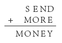
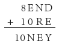
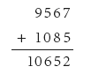
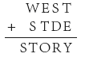
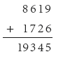

类比推理是由两个事物的某些属性的相同，推论它们在另一属性也可能相同的一种间接推理。例如，太阳上的化学元素，如氧、氮、硫、磷、钾等，地球上都有。科学家用光谱分析，首先发现在太阳上有氦存在，于是就类推地球上也可能有氦存在。后来，英国化学家雷姆果然于1895年在地球上找到了氦元素。
类比推理可以表述如下：设A、B为二事物，已知A、B都有a、b、c，并且又知A事物还有属性d,于是就推论B事物也可能具有属性d。
类比推理的形式是：
A对象具有属性a、b、c、d；
B对象具有属性a、b、c；
因而，B对象也可能具有属性d。
类比推理的结论是或然的，因为推理的根据不充分。前提中所提供的仅仅是A、B两个对象的某些相同点，即从A类对象中具有a、b、c、d属性这个事实，并且根据B类对象也具有a、b、c属性，从而推论出B对象也有属性d。由于A、B两个对象具有某些相同的属性，使我们有可能假定它们属于同类对象，从而推论出A、B两个对象在其他属性上也相同。很显然，这个推论的根据是不充分的。第一，并非任何具有相同点的属性都可以列为同类对象。第二，即使A、B两个对象同属一类，也可能有不同属性。完全可能A对象所具有的d属性，正是A、B两个对象相区别之点。所以说，类比推理实质上是一种推测方法，所得结论是或然的，有待于进一步验证。
例如，火星和地球属同类对象，也有很多相同属性：
① 都存在带有游离氧的空气；
② 都存在水；
③ 都存在白天和黑夜的交替；
④ 都有四季之分；
……
地球上有生命，因此就推断火星上也可能有生命。为此，人类花费了很大的精力，寻找火星上的生命。但是，根据降落在火星上的宇宙探测器在火星表面上所进行的化学实验分析，目前没有发现火星上有生命存在的迹象。
类比推理的运用是有一定条件的。只有当人们已经具有两种事物一定的知识，确知两种事物之间有一定程度的联系，才能从已知的相同的属性，推断它们的其他属性也可能相同。如果两个对象风马牛不相及，或两个对象的共同属性与推出属性没有什么联系，那就不能运用类比推理。
类比推理结论的可靠性取决于共有属性与推出属性之间的联系程度。如果联系比较紧密，结论的可靠性就大些，否则结论的可靠性就小。如果共有属性与推出属性之间有必然联系，得出的结论就具有必然性。
在类比推理中，我们根据A事物有a、b、c、d属性，B事物也有a、b、c属性，推论B事物也可能有d属性。根据属性a、b、c与d的联系程度，就决定了这个推理结论的可靠程度。若有a、b、c属性存在，就有d属性存在，这样结论的可靠性就大些。若a、b、c与d属性的共存只是偶然的，那么结论的可靠性就小。如果a、b、c属性存在，就必然有d属性存在，那么这种结论就是必然的。
为提高类比推理的结论的可靠性，必须注意以下几点：
第一，类比推理是根据两个对象间具有某些共同属性，从而推断在其他属性上也相同。所以，相同的属性愈多，则结论的可靠性就愈大。例如：人们拿石煤渣与化肥类比，化肥中含有的主要成分是钙、镁、氮、磷、钾等，这些成分都是植物所需要的。而石煤渣中也含有钙、镁、氮、磷、钾，人们就推测，石煤渣也可能做植物肥料。后来人们又在实践中发现，化肥呈粉末或液体状，植物容易吸收。实践证明把石煤渣研成粉末状做肥料，效果确实不错。
第二，在运用类比推理时，不但根据两个对象之间的共同属性多少，而且要根据已知属性与推出属性之间联系的紧密程度。
例如，以前人们拿鲸和鱼相类比，看到它们有许多相同之处，如形体相似、都生活在水中等，因而就错误地认为，鲸就是鱼类。后来发现，鲸用肺呼吸、用乳汁哺育幼崽，属于哺乳类动物，虽然也生活在水里，但与卵生的鱼类根本不同。这种错误之所以发生，就是因为所根据的属性与所推出的属性之间并无必然联系。
在运用类比推理过程中，如果发现在类比对象中存在着和推断的属性不相容的属性，那么，不管有多少其他相同属性，也不能推得相同的结论。
例如，尽管地球和月球有许多相同的属性，但是当人们发现，月球上没有空气和水，白天黑夜温差太大，白天最高温度100℃，夜间却下降到零下160℃，在这种条件下，生物是无法生存的。所以，就不能推得月球上也有生命的结论。
类比推理虽有局限性，但作为科学研究和创造发明的探索工具，却是不可或缺的。它的重要作用就在于给人类提供假设。科学界许多发明创造以及现代科学的研究，都广泛运用了类比推理，并取得了丰硕成果。
丹麦物理学家玻尔提出的著名的原子行星模型，就是在原子与太阳系类比的基础上提出的。随着伽利略发现木星卫星而引出太阳系卫星体系与木星卫星体系的类比，成为哥白尼日心说的有力证据。诸如生物学、仿生学、病理学的研究、植物优良品种的培育等，类比推理都起到了不可估量的作用。
（1）中世纪有位神学家把宇宙类比为一架钟，他说：
“钟有构造，有规律；宇宙也是有构造有规律的。既然钟是人造出来的，那么宇宙也必然有制造者，这个创造者不是别的，就是上帝。”
——把这个推理简单整理如下：
钟有构造、有规律，是人创造出来的；
宇宙有构造、有规律；
因而，宇宙也是被创造出来的，是上帝创造的。
首先，有构造有规律的事物何止是钟？什么事物没有构造没有规律？这和上帝创造宇宙的结论有什么联系呢？前提中是人创造的，结论却偷换成是“上帝创造的”。
（2）中世纪科学家比西安·亚雷在为地球中心说辩护时说：
“太阳是被上帝创造出来的，是为照亮地球的，所以，太阳只能是绕着地球旋转。这就像人们总是移动火把照亮房子，而不能移动房子去被火把照亮一样。”
把“是”偷换成“像”，把结论的“可能”偷换成“一定”，这是一种常见的诡辩术。
（3）再比如：
甲：对不起，这么晚了，请别弹钢琴了好吗？
乙：什么？你家孩子半夜哭你怎么不说？你家厕所晚上还有流水声呢，怎么办？你能把厕所关了吗？
能把“孩子哭”“厕所流水声”和弹钢琴相类比吗？虽说都是“声”，却是极不相同的“声”。
（4）公孙龙在《通变论》最后提出了一个“青以白非黄”“白以青非碧”的命题。这个命题是根据阴阳家五行学说进行论证的。命题中讲到青、白、黄、碧等色，都是当时阴阳五行家常用的语词。阴阳家认为，自然界是由金、木、水、火、土五种物质组成，被称为“五行”。阴阳家极力用“五行”观点来解释自然界的四时（春夏秋冬）、方位（东西南北中）和颜色（青赤白黑黄）等自然现象之间的关系。说青是“五行”中木的颜色，它的方位在东，代表春天；白是金的颜色，方位在西，代表秋天；等等。
公孙龙用阴阳家的神秘主义观念论证说：
青白不相予而相予，反对也；不相邻而相邻，不害其方也。不害其方都，反而对各当其所，若左右不骊，故一于青不可，一于白不可，恶乎其有黄矣哉！
公孙龙是说，青与白即东与西本不相合而使相合，结果是正相反对的；东与西本不相邻（东西中间还有中）而使相邻，也不妨碍其东西之方位，东与西是互相反对各在其位的。并由此推出青与白既相邻又不相合，白就不能统一于青，青也不能统一于白，更不会产生黄色和碧色了。
实际上，公孙龙这种不相干的类比是违反逻辑规则的，因为在他的论据和结论之间没有一点客观联系，把毫不相干的现象牵强附会地加以类比和混同。
（5）魏王与惠施有一段对话。
魏王：请你以后说话直截了当，不要老是类比。
惠施：现在有人不知道什么是“弹”，如果他问“弹是什么样的”，我就告诉他，弹就是弹，能明白吗？
魏王：不能明白。
惠施：如果告诉他，弹之状如弓，它的弦是用竹子做成的，可以明白不？
魏王：可以明白。
惠施：类比就是以其所知喻其所不知，而使人知之。你叫我不用类比怎么行呢！”
实际上，惠施运用的不是类比推理，而是修辞学中所说的“比喻”。
人们在实践活动或科学研究工作中，对于某一客观现象的规律性需要，根据已有的知识和已掌握的材料，提出一些初步的、具有不同程度可靠性的看法或解释，作为进一步研究或验证的出发点，这就是假设（或假说）。
例如，以前人们关于地球的核心是炽热的岩浆的解释，物理学中关于原子构造的设想，化学中关于电离的假设，生物学中关于叶绿素发生过程的学说。以及现在关于能源的探索，利用太阳能的远景规划等，都可以说是假设。
假说是科学理论形成的一个必经阶段，是思维认识过程中广泛采用的一个步骤，经过进一步的研究和实验，有些假设被抛弃了，有些假设得到了修正或补充，有的则被肯定下来，成为科学理论。
例如，17世纪德国化学家史塔尔，对于燃烧的本质提出“燃素说”，认为任何能燃烧的物体都包含一种叫作“燃素”的特殊物质。燃烧就是失去燃素的现象。如木材燃烧，就是木材包含的燃素逸出，木材缩小而化为灰烬。当时用这种假设去解释各种燃烧现象，澄清了一些迷信的炼金术观念。因此，燃素说在当时似乎是无可争辩的，它统治化学界足足有一百年之久！然而，燃素说终于不能解决它自身存在的严重矛盾。第一，从来没有人见过或能证明“燃素”的存在。第二，金属燃烧后重量不减反倒增加。按“燃素说”，燃烧时逸出去的燃素势必是负的重量，而这是不可思议的。1756年，俄国的科学家罗蒙诺索夫在实验中发现燃素说是有问题的。直到1774年，化学家拉瓦锡提出了燃烧的氧化学说，才否定了燃素说。
哥白尼的太阳中心说很长时间不被人们所接受，后来由于力学的发展，哥白尼的太阳中心说才被逐步肯定。但从观测中发现，天体运行的轨道是圆的说法不精确。开普勒根据科学观察材料，证明圆形轨道与实际情况不符，行星运行的轨道是椭圆形的。这样就修正并补充了哥白尼的假设。现在，太阳中心说（在太阳系范围内）已从假设发展成科学理论了。
恩格斯曾指出：“只要自然科学在思维着，它的发展形式就是假设。一个新的事实被观察到了，它使得过去用来说明和它同类的事实的方式不中用了。从这瞬间起，就需要新的说明方式了——它最初仅仅依有限数量的事实和观察为基础。进一步的观察材料会使这些假说纯粹化，取消一些，修正一些，直到最后纯粹地构成定律。如果要等待构成定律的材料纯粹化起来，那么这就是在此以前要把运用思维的研究停下来，而定律也就永远不会出现。”①
伟大的科学家门捷列夫指出：“假设是科学，尤其是科学研究所必需的。它能提供一种没有它便很难达到的严整性和单纯性。整个科学史都证明了这一点。因而可以大胆地说：提出一个将来可能是靠不住的假设总比没有假设好。假设使科学工作——探求真理——容易正确，就像农民的犁使谷物容易栽培一样。”

这是一道匿名算术题。
已知：式中8个字母分别代表从0～9之中的一个数字。
求证：哪个字母代表哪个数字。
先假设一下吧，M若是1，O若是0，那么S不是8便是9，先假定S是8，于是——

可是，因为M＝1、O＝0，所以N一定是2或比2大的数，因此——
8END+10RE＜9000+1100＝10100＜10NEY——这个式子不成立，所以S不是8而是9。
依此类推，如果不可能的情况一一排除，就得到唯一的答案：

——这是假设和排除法的联合应用。但这种方法是否在任何情况下都适用呢？让我们把上面的式子稍稍变动一下：

请注意，末位数T（E也是同样）不是O，因为如果T＝0，那么E＝Y，这违反了匿名算术规则（每个字母分别代表一个数字），而且，和的首位数——S必是1，所以T也不是1，这样一步步试下去，T＝2或3……8，结果哪个也不行，剩下唯一一个数就是9。还是一步步假设，一步步排除不可能，所得如下答案：

——但是，这并不是正确的答案，因为计算结果不对。其实这个式子根本没有答案。
第一个式子运用假设和排除法联合运用，得到了正确的答案，在于有解。第二个式子运用同样的方法而失败，在于无解。